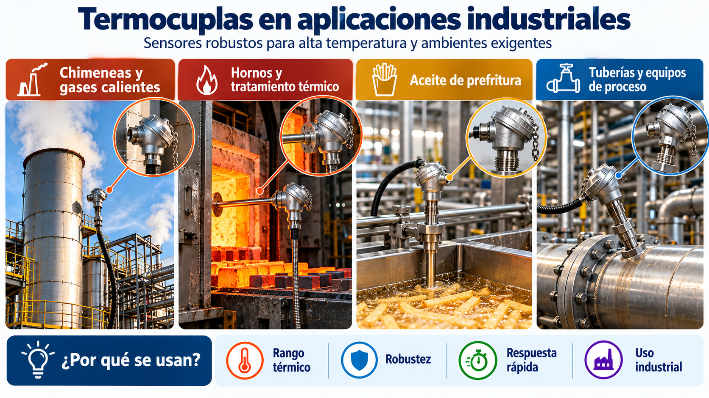
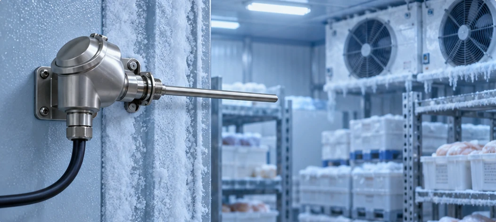
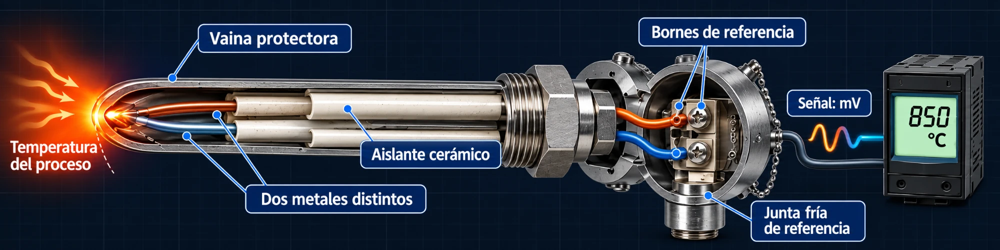
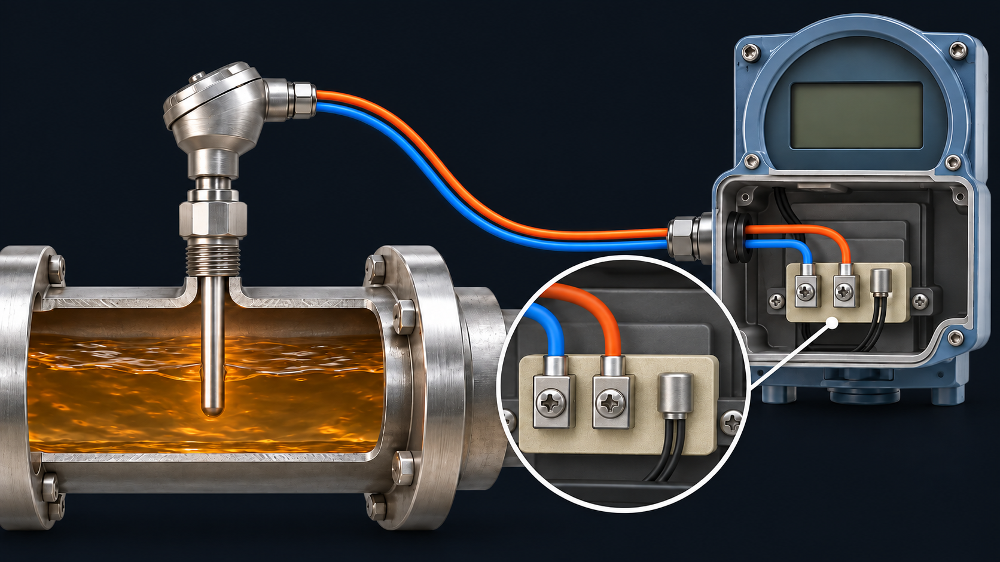
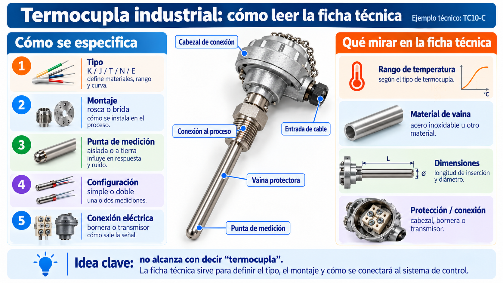
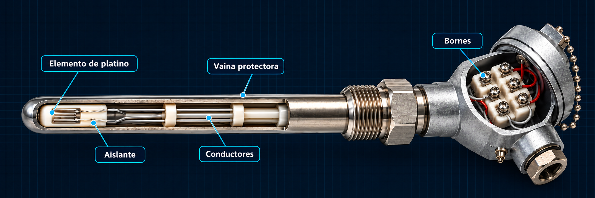
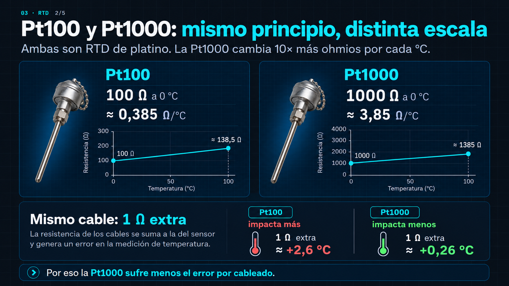

Chimeneas y gases calientes

ING2222 · Tecnología de Control · Familia 6 · FI-UNMdP
Cómo cada tecnología convierte la temperatura en una señal que entiende un sistema de control
Seminario de Sensores · 1–7 bloques · F pantalla completa · ? ayuda
01 · Mapa de la familia Expositor 1
Para elegir el sensor, primero miramos el proceso: temperatura, exactitud, ambiente y posibilidad de contacto.

01 · Mapa de la familia 2/2
Primero, lo que necesita el proceso. Después, la tecnología.
02 · Termocupla Expositor 2
Dos metales distintos unidos en la punta generan una tensión: efecto Seebeck.

Señal primaria: tensión analógica en mV, con polaridad. No es PNP/NPN ni una salida 4–20 mA: para el PLC requiere entrada TC o transmisor.
02 · Termocupla 2/5
V ≈ S · (Tm − Tref)
La tensión depende de Tm y Tref. El instrumento mide la temperatura de sus bornes para obtener la del proceso. “Fría” no significa refrigerada.

Modelo lineal simplificado (tipo K); el instrumento usa la curva normalizada.
02 · Termocupla 3/5
Los mV no crecen en línea recta con la temperatura, y cada par de materiales tiene su propia curva. Por eso, después de compensar la junta fría, el instrumento aplica la curva del tipo de termocupla.
Curvas de referencia NIST / IEC 60584; no son los límites de una sonda real.
Tensión que genera cada tipo a esa temperatura (tocá uno para resaltar su curva):
¿Por qué la K es la más usada? Rango amplio, curva casi recta (≈ 41 µV/°C), aleaciones de níquel mucho más baratas que el platino de la S y buena resistencia a la oxidación: es la de uso general.
A la misma temperatura, cada tipo da distintos mV: la entrada o el transmisor se configura con el tipo correcto y su tabla (IEC 60584).
02 · Termocupla 4/5
WIKA TC10-C es un ejemplo concreto. Primero elegimos qué necesita el proceso; después lo comprobamos en la ficha.

El rango no depende solo de K/J/T: también de la clase, la vaina y las condiciones de uso. La ilustración es general; la ficha confirma las opciones del modelo.
02 · Termocupla 5/5

03 · RTD: Pt100 y Pt1000 Expositor 3
El platino aumenta su resistencia con la temperatura: el instrumento mide Ω y los convierte en °C.

Señal primaria: resistencia analógica en Ω. No es PNP/NPN ni entrega 4–20 mA o 0–10 V por sí sola; la lee una entrada RTD o un transmisor.
03 · RTD 2/4
Mismo principio: ambas son de platino. La Pt1000 cambia 10 veces más Ω por cada °C.

Los gráficos usan distintas escalas de Ω. Sensibilidades medias entre 0 y 100 °C; mayor sensibilidad resistiva no significa diez veces más exactitud.
En conexión de 2 hilos, la resistencia del cable se suma a la del sensor.
03 · RTD 3/5
Simulador · error por cable2 hilos
error = 2·Rc / S
El conexionado a 4 hilos no elimina la tolerancia propia del sensor.
Criterio de selección: el error de cableado admisible.
04 · Termistor · integrado · infrarrojo Expositor 1 + Expositor 4
Semiconductor: alta sensibilidad, respuesta no lineal.
Unión semiconductora con electrónica incorporada: requiere alimentación.
Salida: 250 mV
Salida: dato digital por protocolo 1-Wire.
Una Pt100 con transmisor sigue siendo una Pt100.La electrónica agregada no modifica el principio de medición.
04 · Infrarrojo 2/3 Expositor 4
Capta la radiación térmica de la superficie. La emisividad (ε) define cuánto emite y cuánto refleja.
Mide la superficie, no el núcleo.
En producto congelado se obtiene solo la temperatura superficial.
Simulador · emisividadentorno 25 °C
Modelo simplificado · emisividades ilustrativas.
La radiación IR es lo que recibe el sensor. El TW2000 entrega 4–20 mA para medir y una salida PNP o IO-Link según configuración.
05 · Del sensor al PLC Expositor 4
Desde el lazo de 4–20 mA no puede identificarse el sensor.
05 · Del sensor al PLC 2/3
Simulador · lazo 4–20 mArango 0–200 °C
I = 4 + 16 · (T − Tmin) / (Tmax − Tmin)
05 · Del sensor al PLC 3/3
Conmuta el positivo hacia la carga (conectada a 0 V).
Conmuta la carga hacia 0 V (conectada a +V).
Simulador · salida conmutada
Única salida PNP entre los equipos presentados:
PNP/NPN describe una salida conmutada, no el principio de medición. Una Pt100 no es PNP ni NPN.
06 · Selección y aplicación Expositor 5
Ninguna tecnología es óptima en todos los aspectos: cada elección es un compromiso.
06 · Selección y aplicación 2/3
Punto 1 / 9seleccionar un marcador
| Punto | Rango típico | Tecnología |
|---|
06 · Selección y aplicación 3/3
Mito
Falso: existen RTD para alta temperatura y termocuplas para temperaturas muy bajo cero.
Decide la hoja técnica del sensor concreto, no el nombre de la tecnología.
07 · Cierre Expositor 5
Una misma variable, cinco tecnologías para distintas necesidades.
Fuentes
Ilustraciones redibujadas con fines didácticos. Páginas de hojas técnicas reproducidas de los PDF oficiales.